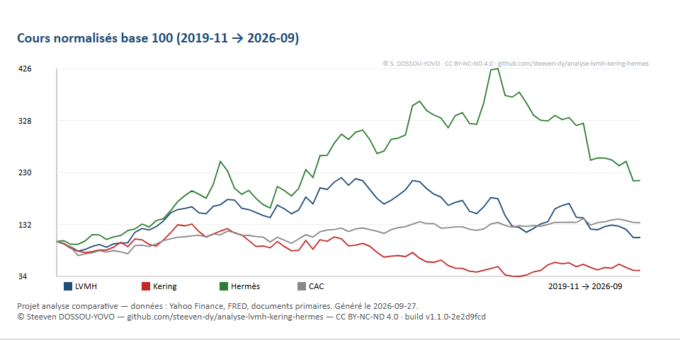
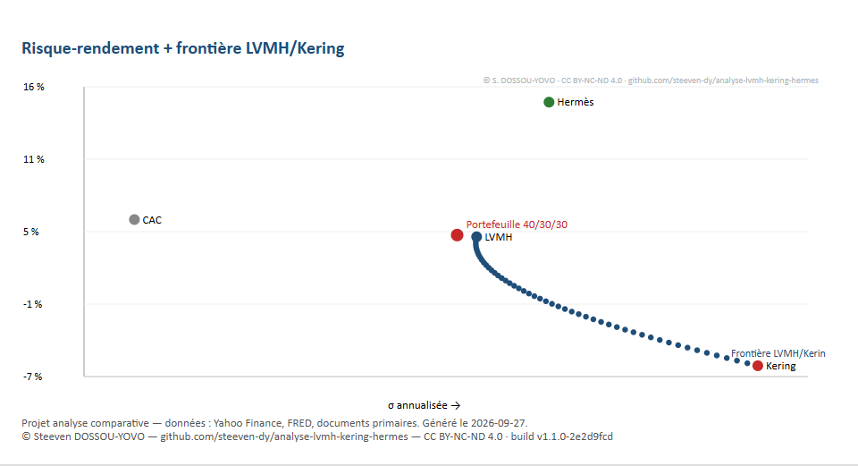
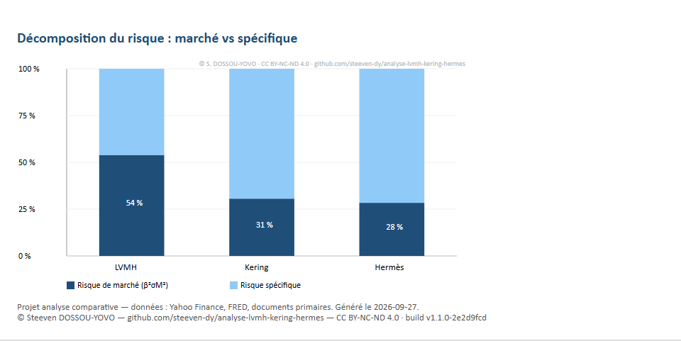

Résultats en bref (base 24/09/2026)
| LVMH | Kering | Hermès | |
|---|---|---|---|
| Cours | 397,10 € | 225,75 € | 1 354,50 € |
| DCF (central) | 450,77 (+13,5 %) | 354,70 (+57,1 %, normatif) | 950,46 (−29,8 %) |
| Valeur retenue (0,6 DCF + 0,4 comp.) | 527,26 (+32,8 %) | 312,80 (+38,6 %) | 1 475,81 (+9,0 %) |
| Consensus analystes | 571–580 | 285–295 | 1 774–1 843 |
| β / α de Jensen | 1,133 / −4,51 % | 1,100 / −14,57 % | 0,883 / +7,40 % |
| EVA 2025 | +2 958 M€ | −1 455 M€ | +2 986 M€ |
Hermès — conserver/renforcer sur repli : qualité absolue (ROIC 53,5 %, trésorerie nette), prix exigeant.
LVMH — acheter : qualité + potentiel, le dossier le plus équilibré.
Kering — acheter spéculatif calibré : retournement conditionnel (Gucci, marge, dette) — suivi trimestriel.
Explorer en 3 étapes
1. Lire l'essentiel
Le tableau ci-dessus + les verdicts : pourquoi LVMH et Hermès créent de la valeur quand Kering en détruit (EVA).
2. Explorer le simulateur
Ouvrez le simulateur interactif : changez le WACC, la croissance g, la prime de risque ou les pondérations — tout se recalcule en direct.
3. Télécharger le dossier
Dossier complet (9 pages : méthode + annexe des calculs), 14 slides, graphiques. FR et EN.
Graphiques clés



Téléchargements
Licences
Contenus (dossier, slides, graphiques, textes du site) : CC BY-NC-ND 4.0 — lecture et partage avec attribution autorisés ; modification et usage commercial interdits. Code (simulateur, scripts) : tous droits réservés — consultation et utilisation en l'état autorisées ; copie, modification ou réutilisation interdites.
Textes intégraux : LICENSE · LICENSE-CODE · LICENCES.md
Comment ce projet a été construit
Méthodes du DSCG (UE212 finance d'entreprise, UE116, UE121) : diagnostic fondamental, valorisation multi-modèles aux formules vérifiées (108/108), MEDAF/Jensen, diversification de portefeuille, EVA/MVA/TSR. Chaque chiffre est traçable vers une source primaire (documents d'enregistrement universel, communiqués) ; le simulateur recalcule tout à partir des séries mensuelles (Yahoo Finance) et de l'OAT (FRED).
Dépôt de code privé — ce site est la vitrine publique.